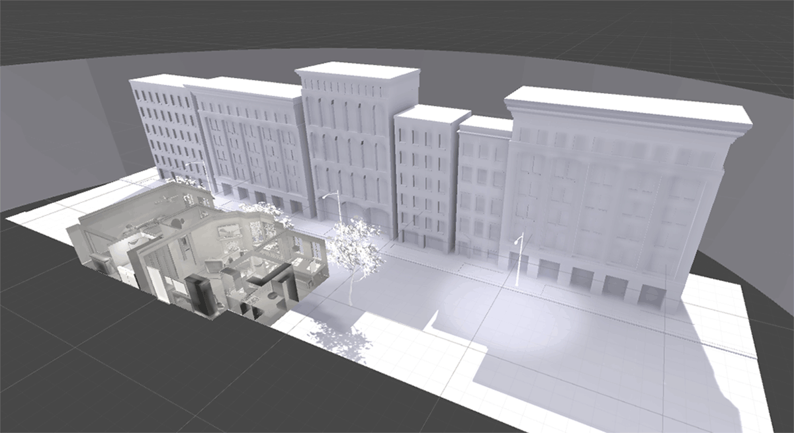
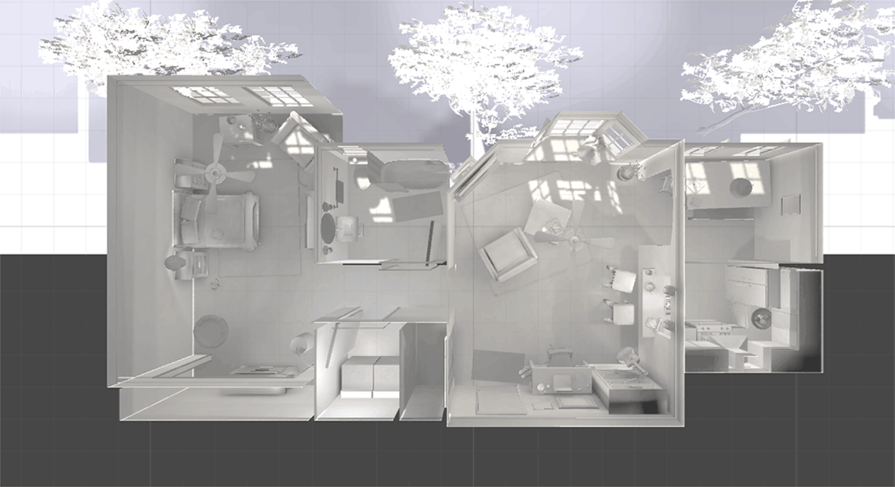
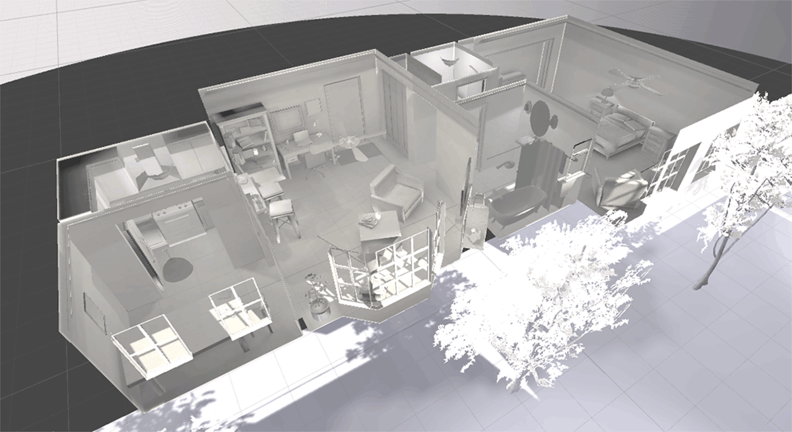
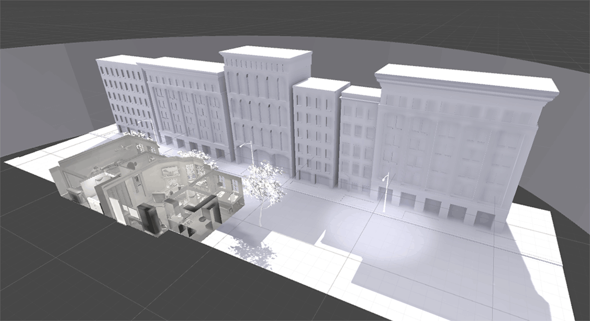
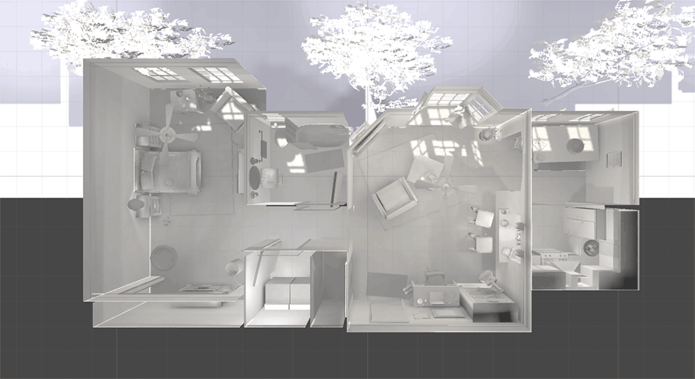
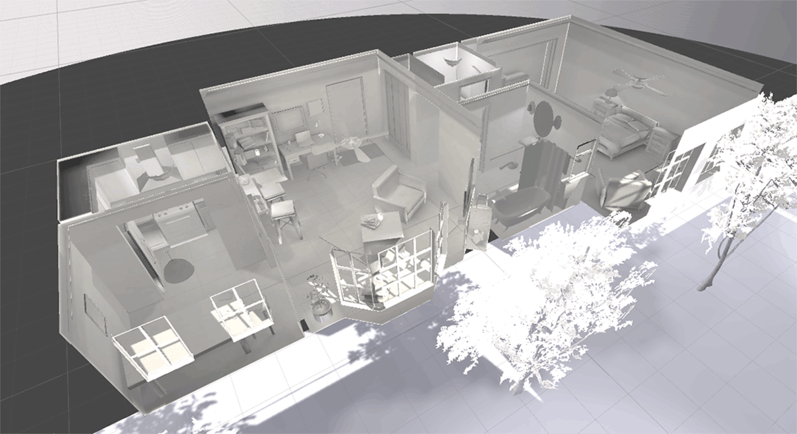

Paint the Town
Project Lead, Lead Developer / Designer, Game Design
Conceived and led the development and design of a virtual reality experience for the Oculus Rift.
github wiki backOverview
Paint the Town is a social VR experience. Players enter a world devoid of color. Each player can interact with the environment, painting a single color onto the space. As players explore the scene, their colors mix, revealing the intended colors of the world, bringing it to life.
The team consisted of a total of 10 designers and developers split into three teams each with specific responsibilities; design, shader development, and gameplay. The development was spread of the course of three quarters (a full academic year at UCSD) in which a demo would be displayed at the end of each quarter.
Teams
Design
- Michelle Viado
- Bryan Thai
- Joanna Lam
Shader
- Samuel Nye
- Zihao 'Michael' Wong
Gameplay
- Brian Choy
- Cassie Zhu
- Jacob Ugalde
- Nathan Mansur
Responsibilities
Created all 3D models used for the project along with textures. Had to work around the requirements imposed by the shader system we developed.
Develop a shader system which allows for user interaction to paint one of three colors (red, blue, or green) onto an object.
Required to implement all interaction with VR peripherals, user interaction, and multiplayer networking.
My Responsibilities
As the lead I was in charge of setting goals for the team as a whole as well as the small teams as week to week milestones and quarter-long deliverables. I set a minimum of two meetings a week; one as a full team development period in which the small teams could communicate on progress and a second meeting which the small teams would coordinate to work on goals specific to just themselves.
I would take on smaller tasks between each of the teams that would help them focus on larger tasks and solve bigger problems. To do this I designed the house model, took over the shader development once we had a working version in order to get other functionality for textures such as normal maps and the like, and developed the functionality for initiating movement and particles for fully colored objects.
Additionally, as a lead within the Virtual Reality Club at UCSD, the student org which oversees the development of these projects, I was part of a network of other leads which would meet weekly to discuss progress. This group allowed for the sharing of knowledge, gauge the progress of other teams, and discuss strategies for leadership within the teams.
Submission
Lobby
The lobby was developed to act as the starting point for players before they begin the experience as well as the space used to start the multiplayer experience, connect the players into one scene, and give a tutorial for the interaction. To move from the lobby scene into the main experience, the players must each interact with the center statue.


Apartment
The main scene of the experience, the apartment was designed to be full of interactive objects. Players each begin within a different room in the apartment to promote individual painting, however the scale of the apartment is small enough to make overlap very likely.


 







Shader
The shader was built from scratch using Unity's Shaderlab language. The requirements for the shader were that a player, with a specific color tag (red, green, or blue), could only reveal that particular color of an object texture at the point on the object the player interacted with. To do this we used Unity's functionality of texture painting with a raycast (changing a point on a object's texture where the player is looking). Each object is then given its image texture (where the color comes from) and three black textures each named 'red alpha', 'green alpha', and 'blue alpha' respectively. A player, if tagged as red, could only interact with the 'red alpha' texture on the object.
Setup
Every object in the experience gets the minimum of an image texture and the three 'alpha' layers (red, green, and blue) with applying normal, reflective, and emission layers where applicable. All color information is from the image texture.
Example of Interaction
Each player is assigned a tag which limits which alpha image they can change the pixels of. To get colors which are not just red, green, and blue, players needs to overlap their interactions.